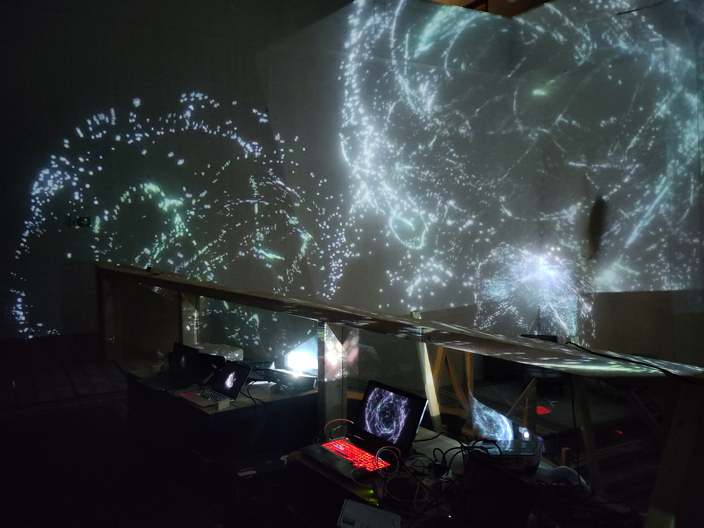

giannihorst.ch
Welcome to my web page
I am a Software Engineer. Period.


Under construction!
0°
0°
click me
0px
Interdimensional
An interactive, interdimensional dance experiment in the browser.

<!-- This code is 100% handmade. -->
<html onclick="s()"style="width:100%;height:100%;background-color: black"><html onclick="s()" style="width:100%;height:100%;background-color: black"><script>
async function s(){ac=new AudioContext;let e=new Blob(['class S extends AudioWorkletProcessor{constructor(){super(),this.c=0}process(t,e){let s=Math.sin,r=e[0];for(let t of r)for(let e=0;e<t.length;e++){let r=this.c/sampleRate*1e3%1e3;for(let a=0;a<10;a++)t[e]=s(2*Math.PI*r*(2*a)*.02);let a=.5*(500-r%500)+Math.sin(.01*r),o=r%500<150?1:0;t[e]=s(2*Math.PI*a*(r/1e3))*o;for(let a=0;a<10;a++)t[e]+=.1*s(2*Math.PI*(3*a)*(.5*s(this.c/sampleRate*.1))*(.5*s(this.c/sampleRate*10))*r/50),t[e]+=.01*s(2*Math.PI*r*.2+a*(s(.001*this.c)+1));r%125<10+r%100&&(t[e]+=.2*Math.random(-.1,.1)),this.c++}return!0}}registerProcessor("s",S);'],{type:"application/javascript"});await ac.audioWorklet.addModule(URL.createObjectURL(e)),new AudioWorkletNode(ac,"s").connect(ac.destination),t=9,x=c.getContext`2d`,c.width=c.height=1e3;let a=Math.random(),r=Math.sin;setInterval((()=>{t+=20,x.clearRect(0,0,c.width,c.height);for(let e=0;e<100;e++){x.strokeStyle=`rgba(${.05*e*t%50}, ${.01*e%30}, ${.01*t%155}, 0.9)`,x.beginPath(),x.arc(500,500,(10*e+t%1e3)*(t%2e3)*.001*.5,0,2*Math.PI),x.stroke(),x.beginPath(),x.strokeStyle="#AAA";let s=r(.001*t)*e+4*e;x.arc(500+20*a,500+20*a,5*e*(1+r(.001*t))*10,s,s+2*(13e-5*t%4+1)*.01),x.stroke(),x.fillStyle="white",tmp1=e/100*(t%1e3)+10*a;let o=500+r(e)*tmp1,c=500+Math.cos(e)*tmp1;x.fillRect(o,c,1,1),o=Math.cos(e)*(e/100)*(t%2e3)+5*a+500,c=r(e)*(e/100)*(t%2e4)+5*a+500,x.fillRect(o,c,2,2)}}),18)}
</script><canvas id="c">